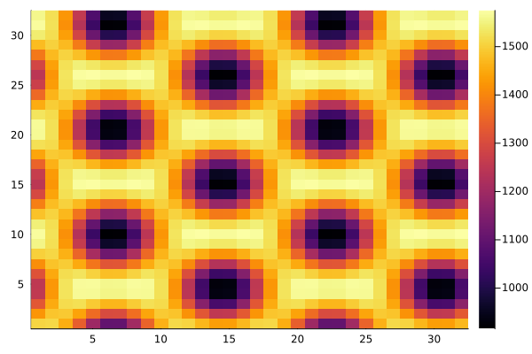

Partial Differential Equation Models
Note this functionality is work in progress in both Catalyst, ModelingToolkit, and MethodOfLines (generally across SciML). As such, the recommended workflows, API features, and observed simulation performance may change. In particular, with a 32x32 mesh as below, calling solve can take 10-20 minutes currently due to compilation issues. For this reason it is best to restrict to one-dimensional spatial models at this time.
We'll simulate the Baras–Pearson–Mansour (BPM) pattern formation model using the parameters in (Kim et al., J. Chem. Phys., 146, 2017).
First we load the packages we'll use
using Catalyst, MethodOfLines, DomainSets, OrdinaryDiffEq, Plots, Random, Distributions
using ModelingToolkit: scalarize, unwrap, operation, nameof, defaultsNext let's specify our default parameter values
# physical domain size is LxL
L = 32.0
# mesh is x0 to xN
N = 32
# time to end the simulation
tstop = 5e4
# for calculating the initial condition
function icfun(n, x, y, A)
float(rand(Poisson(round(n * A * 10))) / A / 10)
end
@register icfun(n, x, y, A)
@parameters begin
k[1:7] = [2e-4, 2e-4, 1.0, 3.33e-3, 16.7, 3.67e-2, 4.44] # reaction rates
D[1:3] = [.1, .01, .01] # diffusivities [DU, DV, DW]
n0[1:3] = [1686.0, 534.0, 56.4] # average initial densities
A = (L/N)^2 # area of a mesh element
endWe now define the reaction model
@variables t x y U(x,y,t) V(x,y,t) W(x,y,t)
rxs = [Reaction(k[1], [U, W], [V, W]),
Reaction(k[2], [V], [W], [2], [1]),
Reaction(k[3], [W], [V], [1], [2]),
Reaction(k[4], [U], nothing),
Reaction(k[5], nothing, [U]),
Reaction(k[6], [V], nothing),
Reaction(k[7], nothing, [V])]
pars = vcat(scalarize(k), scalarize(D), scalarize(n0), [A])
@named bpm = ReactionSystem(rxs, t, [U, V, W], pars; spatial_ivs = [x,y])We now put together the symbolic PDE model
# get the reaction terms
rxeqs = Catalyst.assemble_oderhs(bpm, states(bpm), combinatoric_ratelaws=false)
# get the ordering of the variables within rxeqs
smap = speciesmap(bpm)
# for defining boundary conditions
evalat(u, a, b, t) = (operation(ModelingToolkit.unwrap(u)))(a, b, t)
# construct the PDEs and bcs
∂t = Differential(t)
∂x = Differential(x)
∂y = Differential(y)
Δ(u) = (∂x^2)(u) + (∂y^2)(u)
eqs = Vector{Equation}(undef, 3)
bcs = Vector{Equation}()
for (i,st) in enumerate(states(bpm))
idx = smap[st]
eqs[i] = ∂t(st) ~ D[idx] * Δ(st) + rxeqs[idx]
newbcs = [evalat(st, x, y, 0.0) ~ icfun(n0[idx], x, y, A),
evalat(st, 0.0, y, t) ~ evalat(st, L, y, t),
evalat(st, x, 0.0, t) ~ evalat(st, x, L, t)]
append!(bcs, newbcs)
end
# define the domains
domains = [x ∈ Interval(0.0, L),
y ∈ Interval(0.0, L),
t ∈ Interval(0.0, tstop)]
pmap = collect(defaults(bpm))
@named bpmpdes = PDESystem(eqs, bcs, domains, [x,y,t], [U, V, W], pmap)We now discretize and solve the model
h = L / N # mesh width
order = 2 # order of the discretization
discretization = MOLFiniteDifference([x => h, y => h], t;
approx_order = order,
grid_align = center_align)
prob = discretize(bpmpdes, discretization)
sol = solve(prob, TRBDF2(), saveat = (tstop/10))Plotting $U$ at the final time we get
solU = sol[U]
heatmap(solU[2:end, 2:end, end])